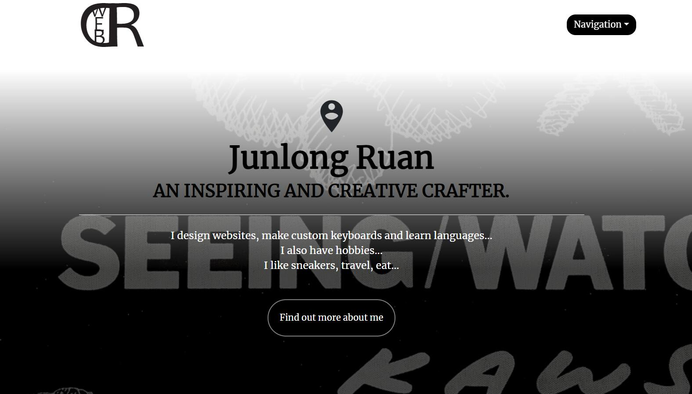

Introduction
This is the home page of my website. I chose a very minimal, simple theme for my website because I want to keep it as clean as possible.
IA Chart

This is a diagram that shows how my web pages link to one another.
Design
Color selection
Black, white and grey are the 3 major colors I used throughout my whole website. They are simple and clean to look at. It is a neat set of colors.
Navigation
As you can see, the navigation bar is built up with logo, heading of the current page, and a dropdown menu. I chose to build a dropdown menu because it is easy to organize and not messed with the other elements in the navigation bar.
Side navigation
The side navigation is given on pages that are filled with different categories of contents. Such as gallery page, and process page. It gives users the ability to choose what they would like to view.
Background
I created these background by my own. I took photos of my desk mat and edited them to make different appearances.
Footer
The footer is in a dark grey background. It is combined with my contact information such as phone number, email address and location. They are fake information, but it is giving an idea.
Accessibility
Text color contrast
The background I made is black(#000000f6). I used a white text. It has a big contrast ratio of 21:1.
The background I ade is grey(#343a40). I used a white text. It has a big contrast ratio of 11.5:1.
Both background and text contrast ratios passed all of the WCAG visibility tests.
Photo Modal
Photo modal is a very important function for users with impaired vision. It benefits them because it can help zoom in the pictures to make it easier to see.
Image descriptions
For every image I have put on the website, I provided with understandable, clear descriptions that describe the images properly.